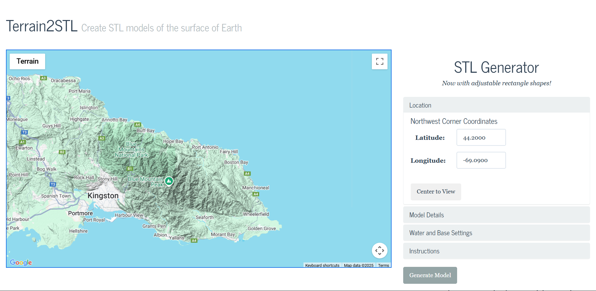

<div class="textcontainer">
<p class="margin"> </p>
<h2>Week 8: CNC Milling</h2>
<h3>Documentation</h3>
<br>
<p style = "font-size: 24px;">For the 8th assignment, Me, Av and Case used CNC (Computer Numerical Control) milling machine to make a small model of a Jamaican mountain (Blue Mountain Peak).
To get the .stl model we used a tool called <a href="https://jthatch.com/Terrain2STL/">Terrain2STL</a>.</p>
<!-- ============================================ -->
<!-- Gallery -->
<!-- ============================================ -->
<section id="gallery-404">
<div class="cs-container">
<div class="cs-content">
<div class="cs-flex">
<h2 class="cs-title">Process</h2>
</div>
</div>
<div class="cs-gallery-wrapper">
<!--Gallery 1-->
<div class="cs-gallery" data-category="one">
<!--Picture 1-->
<picture class="cs-image">
<source media="(max-width: 600px)" src="Terrain2STL.png">
<source media="(min-width: 601px)" src="Terrain2STL.png">

</picture>
<!--Picture 2-->
<picture class="cs-image">
<source media="(max-width: 600px)" src="Jamaican Mountain Process.jpeg">
<source media="(min-width: 601px)" src="Jamaican Mountain Process.jpeg">
<img loading="lazy" decoding="async" src="Jamaican Mountain Process.jpeg" alt="gallery" width="305" height="400">
</picture>
<!--Picture 3-->
<picture class="cs-image">
<source media="(max-width: 600px)" src="Jamaican Mountain.jpeg">
<source media="(min-width: 601px)" src="Jamaican Mountain.jpeg">
<img loading="lazy" decoding="async" src="Jamaican Mountain.jpeg" alt="gallery" width="305" height="400">
</picture>
</div>
</div>
</div>
</section>
<br>
<p style = "font-size: 24px;">Then, for the other part of the assignment, we molded AV's thumb using skin-safe silicone.</p>
<br>
<section id="gallery-404">
<div class="cs-container">
<div class="cs-content">
<div class="cs-flex">
<h2 class="cs-title">Process</h2>
</div>
</div>
<div class="cs-gallery-wrapper">
<!--Gallery 1-->
<div class="cs-gallery" data-category="one">
<!--Picture 1-->
<picture class="cs-image">
<source media="(max-width: 600px)" src="Mold Empty.jpeg">
<source media="(min-width: 601px)" src="Mold Empty.jpeg">
<img loading="lazy" decoding="async" src="Mold Empty.jpeg" alt="gallery" width="384" height="512">
</picture>
<!--Picture 2-->
<picture class="cs-image">
<source media="(max-width: 600px)" src="Mold Filled.jpeg">
<source media="(min-width: 601px)" src="Mold Filled.jpeg">
<img loading="lazy" decoding="async" src="Mold Filled.jpeg" alt="gallery" width="384" height="512">
</picture>
<!--Picture 3-->
<picture class="cs-image">
<source media="(max-width: 600px)" src="Mold Popsicle.jpeg">
<source media="(min-width: 601px)" src="Mold Popsicle.jpeg">
<img loading="lazy" decoding="async" src="Mold Popsicle.jpeg" alt="gallery" width="384" height="512">
</picture>
<!--Picture 4-->
<picture class="cs-image">
<source media="(max-width: 600px)" src="Final Finger.jpeg">
<source media="(min-width: 601px)" src="Final Finger.jpeg">
<img loading="lazy" decoding="async" src="Final Finger.jpeg" alt="gallery" width="384" height="512">
</picture>
</div>
</div>
</div>
</section>